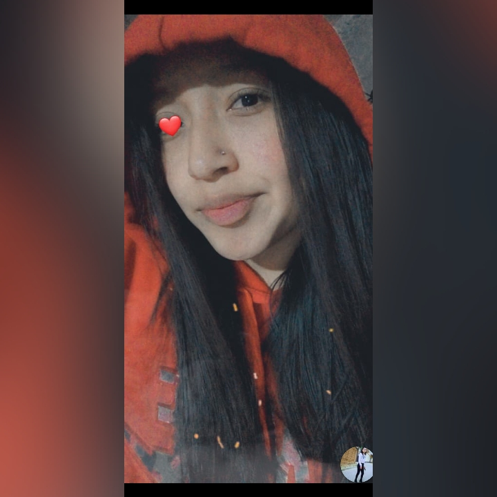

Mi Biografía:
Mi cumpleaños: 15 de junio del 2004
Tengo 17 años,
A los 6 años entre a la primaria ya que no entre al kinder por que mi hermano mayor no entro al kinder.
Cuando entre a la primaria era muy penosa que hasta para poder ir al baño,
como una de mis primas iba conmigo le tenía que decir a ella que le dijera a la profesora que me dejara ir al baño.
Era muy antisocial que para tener un amig@ ell@s tenían que hablarme primero para tener tan siquiera un amig@,
cuando pase a sexto de primaria fui seleccionada para la escolta y
como había mucha competencia le heche muchas ganas para quedar quedar seleccionada
y lo logré. Cuando tenía 10 años realice mi primera comunión, estudie 4 años de catecismo 3 fueron para primera comunión y
a los 12 años realice mi confirmación para eso estudie 1 año más. Al pasar a la secundaria,
cuando llegue tenía muchos nervios ya que los amig@s que logré hacer en la primaria entraron en diferentes secundarias,
tenía que volver a empezar a conocer más personas, después de un tiempo me fui haciendo de amig@s.
Siempre trataba de hacer todo para tener buenas calificaciones aunque si me costaba un poco entender lo que me enseñaban.
Cuando cumplí 15 años me hicieron mis xv años y fue uno de los mejores días de mi vida.
Después al entrar en la preparatoria sentí mucha emoción pero también sentí muchos más nervios por qué sabía que iba a conocer
a personas de otros lugares y que mis amigos se olvidaran, que cada quien tomara su propio camino.
Al comenzar las clases me puse nerviosa por qué me tocó presentarme ante todo el grupo,
al principio no tenía amig@s pero con el paso del tiempo tres chicas (Brenda,María y Itzel),
me hablaron ya que estaba yo sola, desde ese entonces han Sido mis amigas y Brenda hasta el momento es mi mejor amiga.
Signo Del Zodiaco: Geminis.
--------------------------------------------------
Ahora que ya estoy a punto de terminar mi bachillerato estoy
preparándome para entrar a la universidad y tener una licenciatura.